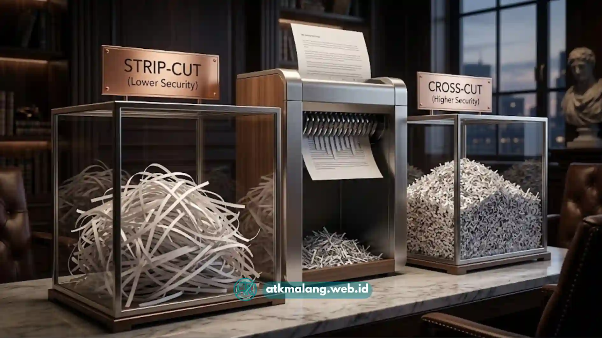

Memilih paper shredder tidak bisa dilakukan sembarangan, terutama bagi kantor di Malang yang memiliki volume dokumen berbeda-beda tergantung jenis usahanya.
Kantor hukum, klinik, sekolah, hingga perusahaan jasa keuangan memiliki kebutuhan penghancuran dokumen yang berbeda, baik dari sisi jumlah kertas per hari maupun tingkat kerahasiaan dokumen tersebut.
Memilih mesin yang tidak sesuai kapasitas justru dapat memperlambat pekerjaan dan mempercepat kerusakan pada alat penting ini.
Daftar Isi
Mengapa Volume Dokumen Menjadi Pertimbangan Utama
Volume dokumen harian menentukan seberapa besar kapasitas mesin yang dibutuhkan.
Kantor dengan volume dokumen rendah, misalnya usaha kecil atau kantor rumahan, umumnya cukup menggunakan mesin berkapasitas kecil yang dirancang untuk penggunaan personal atau kelompok kecil.
Sebaliknya, kantor dengan volume dokumen tinggi seperti perusahaan menengah hingga besar memerlukan mesin dengan kapasitas lembar per proses yang lebih besar serta daya tahan motor yang lebih kuat agar mampu bekerja dalam waktu lama tanpa cepat panas atau macet.
Jika kapasitas mesin tidak sesuai dengan volume dokumen, staf kantor akan sering mengalami antrean penghancuran dokumen yang menumpuk.
Sementara itu, mesin itu sendiri berisiko mengalami keausan lebih cepat karena dipaksa bekerja melebihi kemampuannya.
Bagaimana Cara Menentukan Kapasitas yang Tepat
Untuk menentukan kapasitas yang tepat, mulailah dengan memperkirakan jumlah lembar kertas yang perlu dihancurkan dalam sehari.
Kantor dengan kebutuhan ringan biasanya cukup menghancurkan puluhan lembar per hari, sementara kantor dengan aktivitas dokumen tinggi bisa mencapai ratusan lembar.
Selain jumlah lembar, perhatikan juga durasi penggunaan berkelanjutan atau run time, yaitu berapa lama mesin dapat bekerja terus-menerus sebelum perlu waktu jeda untuk mendinginkan motor.
Mesin dengan run time singkat kurang cocok untuk kantor yang sering menghancurkan dokumen dalam jumlah besar sekaligus.
Jadi, pertimbangkan secara matang rutinitas penghancuran dokumen yang ada di divisi Anda.
Jenis Potongan Kertas Mana yang Sesuai Kebutuhan Kantor
Selain kapasitas, jenis potongan kertas juga perlu disesuaikan dengan tingkat kerahasiaan dokumen.
Potongan strip-cut menghasilkan lembaran memanjang dan cocok untuk dokumen dengan tingkat kerahasiaan rendah hingga menengah.
Potongan cross-cut menghasilkan potongan lebih kecil dan lebih aman, cocok untuk dokumen dengan informasi sensitif seperti data pelanggan atau catatan keuangan.
Untuk dokumen dengan tingkat kerahasiaan sangat tinggi, potongan micro-cut menjadi pilihan yang lebih aman.
Hal ini dikarenakan potongan micro-cut menghasilkan serpihan yang jauh lebih halus sehingga sangat sulit disusun kembali oleh pihak luar.

Perbedaan jenis potongan kertas: strip-cut, cross-cut, dan micro-cut pada mesin penghancur.Faktor Lain yang Perlu Dipertimbangkan
Selain kapasitas dan jenis potongan, ada beberapa faktor tambahan yang sebaiknya diperhatikan sebelum membeli paper shredder.
Ukuran wadah penampung memengaruhi seberapa sering staf perlu mengosongkan mesin wadah yang lebih besar cocok untuk kantor dengan volume dokumen tinggi agar tidak perlu bolak-balik membuang potongan kertas.
Fitur keamanan seperti sensor anti macet dan pengaman anak juga penting, terutama jika mesin diletakkan di area kerja bersama.
Selain itu, pertimbangkan pula tingkat kebisingan mesin, terutama jika akan digunakan di ruang kerja terbuka.
Kemudahan perawatan seperti akses untuk pelumasan pisau juga menjadi pertimbangan penting agar mesin elektronik kantor tetap berkinerja baik dalam jangka panjang.
Kesalahan Umum saat Memilih Paper Shredder
Kesalahan yang sering terjadi adalah memilih mesin hanya berdasarkan harga tanpa memperhitungkan volume dokumen sebenarnya.
Akibatnya, mesin cepat rusak karena dipaksa bekerja di luar kapasitas idealnya setiap hari.
Kesalahan lain adalah mengabaikan jenis potongan yang dibutuhkan, sehingga dokumen sensitif dihancurkan dengan potongan yang sebenarnya kurang aman seperti strip-cut.
Beberapa kantor juga sering lupa mempertimbangkan ruang penempatan mesin, padahal ukuran fisik mesin berkapasitas besar biasanya lebih memakan tempat dan membutuhkan ruang yang cukup.
Memilih paper shredder yang tepat untuk kantor di Malang perlu mempertimbangkan volume dokumen harian, jenis potongan sesuai tingkat kerahasiaan, kapasitas wadah penampung, serta fitur keamanan tambahan.
Dengan mempertimbangkan faktor-faktor tersebut secara menyeluruh, Anda dapat memperoleh mesin Alat Tulis Kantor yang efisien dan sesuai dengan pengelolaan dokumen perusahaan Anda.